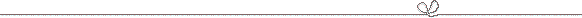
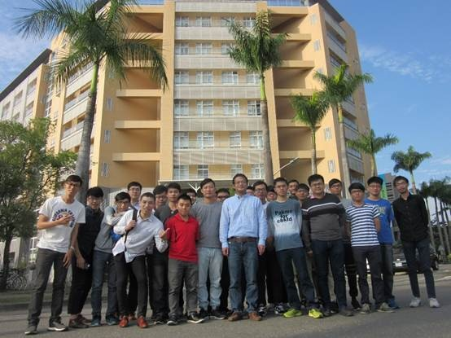

Cheng-Ta
Chiang’s Lab
Mixed-Signal Integrated Circuits and Systems (MS ICS) Laboratory


E-mail: ctchiang@mail.ncyu.edu.tw
Welcome
FRIENDS ALL OVER THE WORLD TO VISIT US!!
EDUCATION
Ph.D., Electronics Engineering, National Chiao Tung University, Taiwan, 2006.
M.S., Biomedical Engineering, National Cheng Kung University, Taiwan, 2001.
B.S., Electronics Engineering, Chung-Yuan Christian University, Taiwan, 1999.
Areas of Research
Experiences
Recent
Refereed Journal Articles
¨Cheng-Ta Chiang*, D. Y.
Lin, and J. Q. Chang, "Design of A CMOS Retinal-Inspired
Optical Chip for High Background Light Environment Applications," Sensors
and Actuators A: Physical, vol. 401, pp. 1-16, April 2026. 【NEWS】【NEWS】【NEWS】
¨Cheng-Ta Chiang*, S. Y. Cheng, and Y. F. Tsai, "A CMOS Optical Position-Sensitive Detector
(PSD) with Built-in Light Flicker Noise Filter for High-Background-Light Environment Applications," IEEE
Sensors Journal, vol. 26, no. 3, pp. 5005-5012, Feb. 2026.
¨Cheng-Ta Chiang*, J. Y. Shen, and K. H. Chen, "A Beer Freshness Detector for Open-Can Beer Drink Safety Applications," IEEE
Sensors Journal, vol. 25, no. 13, pp. 25543-25550, July 2025. 【NEWS】【NEWS】
¨Cheng-Ta Chiang*, "CASS Chapter Highlights," IEEE Circuits and Systems Magazine, vol. 25, no. 1, pp. 106-108, Feb. 2025.
Recent
International Conference Papers
¨C. T. Chiang, Y. C. Chao, and J. E. Tsai, "A CMOS Motor-Generator Voltage-to-Frequency Converter with Calibration
Circuit for Electric Vehicle Speed Estimation," in Proc. of IEEE International Conf. on Applied
System Innovation, ICASI'26, April
2026.
¨C. T. Chiang, Y. T. Hsieh, and Y. S. Liu, "A CMOS Astaxanthin
Concentration to Period Converter for Applications of Measuring Nutraceutical Astaxanthin," in Proc. of IEEE International Conf. on Applied
System Innovation, ICASI'26, April
2026.
¨C. T. Chiang, C. H. Hsu, and Y. S. Hsu, "A CMOS Caffeine Content to Duty Cycle Converter with Calibration Circuit
for Caffeine Content Detection," in Proc. of IEEE International Conf. on Applied System
Innovation, ICASI'26, April 2026.
Local
Conference Papers
¨C. T. Chiang and L. C. Huang,
"A CMOS Auto-High Background Immunity Position-Sensitive Detector (PSD)
for High Background Light Environment,” in Proc.
of the 33th VLSI Design/CAD Symposium, pp. 1-4, Aug. 2022.
¨C. T. Chiang, C.
Y. Nien, M. S. Yang, C. Y. Yang, and S. M. Chen, "A CMOS Algae Growth
Period to Duty Cycle Converter for Monitoring Algae Growth Status
Applications," in Proc. of
the 33th VLSI Design/CAD Symposium, pp. 1-4, Aug. 2022.
¨Y. H. Wu, C. H.
Chao, and C. T. Chiang, "A
Real-time Artificial Intelligence Recognition System on Contaminated Eggs for
Egg Selection," in Proc. of the Artificial Intelligence Technology
and Application, pp. 467-472, May 2022.
Patents
¨Cheng-Ta Chiang, "A Wind Velocity to Frequency Conversion
Apparatus," ROC Patent I456244, Oct. 11, 2014.
¨Cheng-Ta Chiang, "A Light to Frequency Conversion Apparatus
and a Method thereof," ROC Patent I452403, Sep. 11, 2014.
¨Cheng-Ta Chiang and Chung-Yu Wu, "Pseudo-BJT Based Retinal
Focal-Plane Sensing System," US Patent 7,215,370, May 8, 2007.
¨Cheng-Ta Chiang and Chung-Yu Wu, "Pseudo-BJT Based Retinal
Focal-Plane Sensing System," ROC Patent I263170, Oct. 1, 2006.
Editorial
Reports
¨Cheng-Ta Chiang, "Analysis
and Design of a Novel Capacitive Sensor and Signal Conditioning Circuit," Ph.D. Dissertation, National
Chiao Tung University, Nov. 2006.
¨Cheng-Ta Chiang, "VLSI Implementation
of Microstimulator Prototype," Master Thesis, National Cheng
Kung University, May 2001.
Grants
and Contracts
2010-2011 MEMS Integration
Acoustic Chip (I), National Science Council, N.T 585,000; PI.
2011-2012 CMOS Image Sensors, SAR ADC,
Pipelined ADC, Sigma-Delta Modulator, Light-to-Frequency Converter, and
Capacitive Touch Converter, Maxi-Amp Inc., N.T 300,000; PI.
2012-2013 LED Print-Head Driving
Chips with Compensation Circuits, National Science Council, N.T 663,000; PI.
2013-2014 Integrated
Intelligent Light Sensing System, National Science Council, N.T 413,000; PI.
2013-2014 Design and
Implementation of Digitized Transducer for Optical Incremental Sensors,
National Science Council, N.T 732,000; PI.
2013-2014 Design
and Implementation of Sensors and Sensing Circuits, Ministry of Education, N.T 550,000; PI.
2014-2015 A High-Linearity
and Wide-Dynamic Range Light to Frequency Converter with Calibration Circuits, Ministry of Science and Technology, N.T 674,000; PI.
2014-2015 Design
and Implementation of Microsensors and Module Sensing Circuits, Ministry of
Education, N.T 600,000; PI.
2015-2016 A
General-Purpose Digitized Salinity Transducer with Calibration Circuits for
Monitoring Salinity of Ocean Environment and Aquaculture, Ministry of Science and Technology, N.T 518,000; PI.
2015-2016 Design and Implementation of Sensors and Sensing Circuits, Ministry of
Education, N.T 446,875; PI.
2016-2017 A Monolithic CMOS Digitized
Micro-Accelerometers Implemented by Multi-Level Force-Feedback Analog Sensing
Circuits with 16-Bit Delta-Sigma Modulator, Ministry of Science and
Technology, N.T 829,000; PI.
2018-2019 Integrated Intelligent Biologically
Stereo Imaging Sensing System, Ministry of Science and Technology, N.T 623,500; PI.
2018-2020 LoRaWAN
Application Course, Ministry of Education, N.T 650,000; PI.
2020-2021 An IoT Integrated Circuit of
Salinity Difference Sensor Transducer with Auto-Sensitivity Selection Used in
Aquaculture, Ministry of
Science and Technology, N.T 734,000; PI.
2020-2021 An Integrated Internet of Things
(IoT) Sensing IC System for New Agriculture Livestock Applications, Ministry of
Science and Technology, N.T 698,895; PI. Recognition Recognition
2021-2022 Design and
Implementation of Sensors and Sensing Circuits in Intelligent Health, Ministry of Education, N.T 720,000; PI. Recognition Recognition
2021-2022 A General-Purpose Food Concentration
Converter for Electrochemical Cyclic Voltammetry (CV) Sensing Applications:
Chili as an Example, Ministry of Science and Technology, N.T 608,000; PI.
2023-2024 Design of a CMOS Auto-High
Background Immunity Position-Sensitive Detector (PSD) for High Background Light
Environment, Ministry of
Science and Technology Council, N.T 635,000; PI.
2024-2025 Design of a Conversion Circuit for
Determining Tea Polyphenol Concentrations in Tea for Applications in
Nutraceuticals, Ministry of Science and Technology Council, N.T 990,000; PI.
Undergraduate
students from our lab
|
2012 |
曾俊傑 |
中央大學電機研究所 (Master) |
|
2013 |
劉家耀 |
中正大學電機研究所 甄試
(Master) |
|
劉周倫 |
交通大學電機研究所 榜首
(Master) |
|
|
柯博涵 |
成功大學電機研究所 (Master) |
|
|
楊仁傑 |
中央大學電機研究所 (Master) |
|
|
黃炫貴 |
交通大學影像與生醫光電研究所
(Master) |
|
|
章坤瀧 |
中央大學電機研究所 (Master) |
|
|
林弘麒 |
台北科技大學機電整合研究所 (Master) |
|
|
李俊廷 |
嘉義大學電機研究所 (Master) |
|
|
2014 |
林季彥 |
台灣科技大學電機研究所 甄試
(Master) |
|
2015 |
劉霖 |
中興大學電機研究所 甄試
(Master) |
|
蔡秉辰 |
台灣科技大學電子研究所 甄試
(Master) |
|
|
洪建智 張哲瑋 |
成功大學電機研究所 (Master) 台灣科技大學電子研究所 (Master) |
|
|
2016 |
張福文 |
清華大學電機研究所 甄試
(Master) |
|
黃士銘 |
中正大學電機研究所 甄試
(Master) |
|
|
尤志成 |
中山大學電機研究所 甄試
(Master) |
|
|
2017 |
黃宥閎 |
清華大學奈米工程與微系統研究所 甄試
(Master) |
|
侯玉婷 |
清華大學電機研究所 甄試
(Master) |
|
|
劉冠賢 |
中山大學電機研究所 甄試
(Master) |
|
|
黃思維 |
中山大學電機研究所 甄試
(Master) |
|
|
2018 |
張家銘 |
中興大學電機研究所 甄試
(Master) |
|
|
呂彥逵 |
中興大學電機研究所 甄試
(Master) |
|
|
林子恆 |
中正大學電機研究所 (Master) |
|
2019 |
黃清和 |
中央大學電機研究所 甄試
(Master) |
|
|
簡亮語 |
中興大學電機研究所 甄試榜首
(Master) |
|
2020 |
謝律紳 |
台灣大學電子研究所 甄試
(Master) |
|
|
陳琮元 |
中央大學電機研究所 甄試
(Master) |
|
|
吳易庭 |
台灣科技大學電機研究所 (Master) |
|
2021 |
許仁禎 |
台灣科技大學電子研究所 甄試 (Master) |
|
|
林雯婕 |
台北科技大學電機研究所 (Master) |
|
|
許芳綺 |
台灣科技大學電子研究所 甄試
(Master) |
|
2022 |
徐崇瑜 |
台灣科技大學電子研究所 甄試 (Master) |
|
|
黃耀頡 |
中興大學電機研究所 甄試 (Master) |
|
2023 |
黃禮珺 |
中央大學電機研究所 甄試 (Master) |
|
|
吳毓祥 |
成功大學智慧與永續製造學位學程 甄試 (Master) |
|
|
粘峻耀 |
中央大學電機研究所 甄試 (Master) |
|
|
楊閔順 |
雲林科技大學電子研究所 甄試 (Master) |
|
|
黃宣陽 |
台北科技大學電子研究所
(Master) |
|
2024 |
吳聖民 |
台灣大學光電工程學研究所 甄試 (Master) |
|
|
黃子軒 |
中山大學資訊工程研究所 甄試
(Master) |
|
|
吳翊誠 |
成功大學光電科學與工程研究所 甄試
(Master) |
|
|
楊書桓 |
中山大學先進半導體封測研究所 甄試
(Master) |
|
2026 |
沈雋詠 |
台灣大學光電工程學研究所 甄試 (Master) |
|
|
鄭士佑 |
台灣大學光電工程學研究所 甄試 (Master) |
|
|
蔡宜芳 |
中山大學電機工程研究所 甄試
(Master) |
|
|
張俊淇 |
中央大學電機工程研究所 甄試
(Master) |
|
|
林東逸 |
中山大學資訊工程研究所 甄試
(Master) |
|
|
陳冠宏 |
陽明交通大學電子物理研究所 (Master) |
Graduate
students from our lab
|
2013 |
黃冠綸 (MS) |
|
2014 |
王晟瑋 (MS) |
|
Asih Setiarini (MS) |
|
|
2015 |
謝長志 (MS) |
|
彭啟睿 (MS) |
|
|
2016 |
林晉樑 (MS) |
|
|
林智韜 (MS) |
|
2018 |
江順均 (MS) |
|
|
劉康宇 (MS) |
|
2019 |
林連登 (MS) |
Teaching
Courses in 2026 Autumn Semester
|
1 |
Electronics
III |
|
2 |
Introduction
of VLSI |
|
3 |
Digital
Signal Processing |
{kind=link}
{kind=link}
{kind=link}
{kind=link}
{kind=link}
{kind=link}
{kind=link}
{kind=link}
{kind=link}
{kind=link}
{kind=link}
{kind=link}
{kind=link}
{kind=link}
{kind=link}
{kind=link}
{kind=link}
{kind=link}
{kind=link}
{kind=link}
{kind=link}